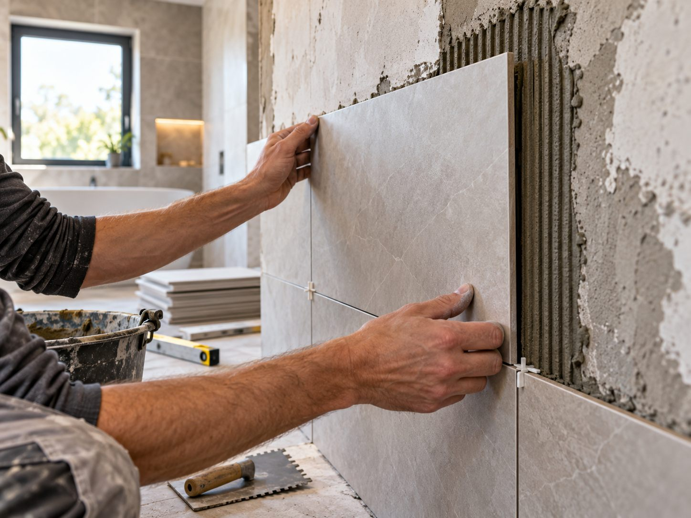

BLOG MAKA-STAV
Inspirace, rady a novinky ze světa rekonstrukcí.
Praktické průvodce pro plánování rekonstrukce a ověřené novinky z našeho webu.

Rady a tipy ·
Rekonstrukce bytu v Praze: jak připravit zadání a poptávku
Seznam priorit, fotografie prostoru, rozsah prací a představa o termínu. Co připravit, aby první domluva měla konkrétní základ?
Číst článekDalší články

Rady a tipy ·
Rekonstrukce koupelny: co si ujasnit před zahájením prací
Sprcha nebo vana, úložné místo, zásuvky, obklady a návaznost prací. Připravte si rozhodnutí, která ovlivní podobu nové koupelny.
Číst článek
Rady a tipy ·
Jak vybrat podlahu do bytu: dřevo, vinyl nebo laminát?
Vzhled krytiny je jen jedna část rozhodnutí. Důležitý je způsob používání místnosti, stav podkladu i návaznost na dveře a další povrchy.
Číst článek
Aktuality ·
Nový přehled služeb na webu MAKA-STAV
Služby jsme na webu uspořádali do pěti oblastí: elektroinstalační, stavební, vodoinstalační a podlahářské práce a hromosvody.
Číst článek